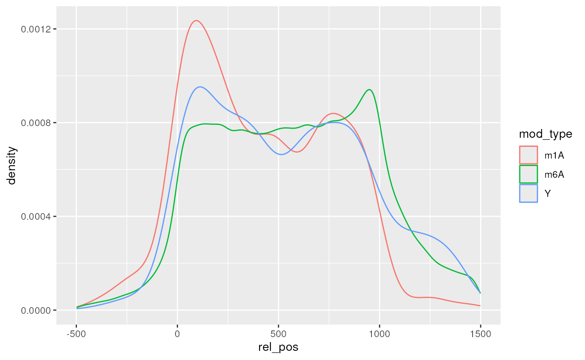

vignettes/EpiTxDb.Rmd
EpiTxDb.Rmd
if (!requireNamespace("BiocManager", quietly = TRUE))
install.packages("BiocManager")
BiocManager::install(c("EpiTxDb","EpiTxDb.Hs.hg38"))The epitranscriptome includes all post-transcriptional modifications of the RNA and describes and additional layer of information encoded on RNA. Like the term epigenome it is not about a change in nucleotide sequences, but the addition of functional elements through modifications.
With the development of high throughput detection strategies for specific RNA modifications, such as miCLIP and Pseudo-Seq amongst other, a large number of modified positions have been identified and were summarized via the RMBase project (Xuan et al. 2017; Sun et al. 2015) project.
To make these information avaialble within the Bioconductor universe
EpiTxDb was developed, which facilitates the storage of
epitranscriptomic information. More specifically, it can keep track of
modification identity, position, the enzyme for introducing it on the
RNA, a specifier which determines the position on the RNA to be modified
and the literature references each modification is associated with.
The class EpiTxDb is the class for storing the
epitranscriptomic data. It inherits the inner workings of
AnnotationDb class from the AnnotationDbi
package.
As an example for the vignette the snoRNAdb data (Lestrade and Weber
2006) from the EpiTxDb.Hs.hg38 package will be
used. The data is stored in the AnnotationHub and is
downloaded and cached upon the first request.
etdb <- EpiTxDb.Hs.hg38.snoRNAdb()## loading from cache
etdb## EpiTxDb object:
## # Db type: EpiTxDb
## # Supporting package: EpiTxDb
## # Data source: snoRNAdb
## # Organism: Homo sapiens
## # Genome: hg38
## # Coordinates: per Transcript
## # Nb of modifications: 235
## # Db created by: EpiTxDb package from Bioconductor
## # Creation time: 2020-02-26 10:34:30 +0100 (Wed, 26 Feb 2020)
## # EpiTxDb version at creation time: 0.99.0
## # RSQLite version at creation time: 2.2.0
## # DBSCHEMAVERSION: 1.0As expected for an AnnotationDb class the general
accessors are available.
keytypes(etdb)## [1] "MODID" "MODNAME" "MODSTRAND" "MODTYPE"
## [5] "REF" "REFTYPE" "RXENSEMBL" "RXENSEMBLTRANS"
## [9] "RXENTREZID" "RXGENENAME" "SNID" "SNNAME"
## [13] "SPECENSEMBL" "SPECENSEMBLTRANS" "SPECENTREZID" "SPECGENENAME"
## [17] "SPECTYPE"
columns(etdb)## [1] "MODEND" "MODID" "MODNAME" "MODSTART"
## [5] "MODSTRAND" "MODTYPE" "REF" "REFID"
## [9] "REFTYPE" "RXENSEMBL" "RXENSEMBLTRANS" "RXENTREZID"
## [13] "RXGENENAME" "RXID" "RXRANK" "SNID"
## [17] "SNNAME" "SPECENSEMBL" "SPECENSEMBLTRANS" "SPECENTREZID"
## [21] "SPECGENENAME" "SPECID" "SPECTYPE"## [1] "1" "2" "3" "4" "5" "6"
select(etdb, keys = "1",
columns = c("MODNAME","MODTYPE","MODSTART","MODSTRAND","SNNAME",
"RXGENENAME","SPECTYPE","SPECGENENAME"),
keytype = "MODID")## 'select()' returned 1:1 mapping between keys and columns## MODID MODNAME MODTYPE MODSTART MODSTRAND SNNAME RXGENENAME SPECTYPE
## 1 1 Um_14 Um 14 + NR_003285 fibrillarin snoRNA
## SPECGENENAME
## 1 SNORD71The columns with the prefix RX or SPEC
reference the reaction enzyme and the location specifier. This can be
the same information, but for ribosomal modifications from the snoRNAdb
it is of course fibrillarin and a snoRNA.
In addition the following accessor for metadata are available as well.
species(etdb)## [1] "Homo sapiens"
organism(etdb)## [1] "Homo sapiens"
seqlevels(etdb)## [1] "NR_003285" "NR_003286" "NR_003287" "NR_004430" "NR_002716" "NR_003925"
## [7] "NR_002756" "NR_004394" "NR_029422"The specialized accessors are modifications() and
modificationsBy(). modifications() allows for
filtering results, whereas modificationsBy() returns all
the modifications in batches separated by certain information.
modifications(etdb, columns = c("mod_id","mod_type","mod_name",
"rx_genename","spec_genename",
"ref_type","ref"),
filter = list(mod_id = 1:3))## GRanges object with 3 ranges and 7 metadata columns:
## seqnames ranges strand | mod_id mod_type mod_name
## <Rle> <IRanges> <Rle> | <integer> <character> <character>
## [1] NR_003285 14 + | 1 Um Um_14
## [2] NR_003285 55 + | 2 Y Y_55
## [3] NR_003285 69 + | 3 Y Y_69
## rx_genename spec_genename ref_type ref
## <CharacterList> <CharacterList> <CharacterList> <CharacterList>
## [1] fibrillarin SNORD71 PMID 16381836
## [2] dyskerin pseudouridi.. SNORA72 PMID 16381836
## [3] dyskerin pseudouridi.. SNORA69 PMID 16381836
## -------
## seqinfo: 9 sequences from hg38 genome; no seqlengths
# split by sequence name, usually a transcipt identifier
modificationsBy(etdb, by = "seqnames")## GRangesList object of length 9:
## $NR_003285
## GRanges object with 4 ranges and 3 metadata columns:
## seqnames ranges strand | mod_id mod mod_name
## <Rle> <IRanges> <Rle> | <integer> <character> <character>
## [1] NR_003285 14 + | 1 Um Um_14
## [2] NR_003285 55 + | 2 Y Y_55
## [3] NR_003285 69 + | 3 Y Y_69
## [4] NR_003285 75 + | 4 Gm Gm_75
## -------
## seqinfo: 9 sequences from hg38 genome; no seqlengths
##
## ...
## <8 more elements>
# split modification type
modificationsBy(etdb, by = "modtype")## GRangesList object of length 5:
## $Am
## GRanges object with 39 ranges and 3 metadata columns:
## seqnames ranges strand | mod mod_id mod_name
## <Rle> <IRanges> <Rle> | <character> <integer> <character>
## [1] NR_003286 27 + | Am 5 Am_27
## [2] NR_003286 99 + | Am 9 Am_99
## [3] NR_003286 159 + | Am 15 Am_159
## [4] NR_003286 166 + | Am 16 Am_166
## [5] NR_003286 468 + | Am 25 Am_468
## ... ... ... ... . ... ... ...
## [35] NR_002716 30 + | Am 207 Am_30
## [36] NR_003925 65 + | Am 216 Am_65
## [37] NR_004394 47 + | Am 226 Am_47
## [38] NR_004394 53 + | Am 227 Am_53
## [39] NR_004394 53 + | Am 228 Am_53
## -------
## seqinfo: 9 sequences from hg38 genome; no seqlengths
##
## ...
## <4 more elements>Since epitranscriptomic modifications by their nature can have different meaning for each of the individual transcript variants. This also introduces conflicts for saving epitranscriptomics coordinates. In the example above the coordinates are given per transcript, because of the source data.
However, not all sources report transcript coordinates. It might be of interest to shift the coordinates to transcript coordinates and at the same time taking care that with transcript variants multiple options exist for each of the transcript maturation process: From one genomic coordinate, multiple transcriptomic coordinates can be spawned.
Whether this is biologically relevant or whether biological evidence does exist for each modification on each transcript cannot be guaranteed or differentiated technically depending on the methods used. This might change with the arrival of new techniques allowing for detection of modified nucleotides per individual transcript variant.
txdb <- TxDb.Hsapiens.UCSC.hg38.knownGene
seqlevels(txdb) <- "chr1"
bs <- BSgenome.Hsapiens.UCSC.hg38
etdb <- EpiTxDb.Hs.hg38.RMBase()## loading from cache
tx <- exonsBy(txdb)
mod <- modifications(etdb, filter = list(sn_name = "chr1"))
length(mod)## [1] 47275In the following example we will focus on shifting the coordinates to
individual mature transcripts. However, keep in mind, that premature
transcript might be of interest as well and this can be controlled via
the tx arguments of
shiftGenomicToTranscript()
mod_tx <- shiftGenomicToTranscript(mod, tx)## Warning: Coordinates for 982 ranges of 'subject' not found:
## 'chr1:14662:-','chr1:14668:-','chr1:14766:-','chr1:139005:-','chr1:139020:-','chr1:139040:-','chr1:139127:-','chr1:629454:+','chr1:629456:+','chr1:629465:+'
## and more ...
length(mod_tx)## [1] 196189Due to multiple matches for each transcript variant the number of modifications has increased.
With the we can plot the relative positions of modifications by type
on chr1 transcripts.
mod_tx <- split(mod_tx,seqnames(mod_tx))
names <- Reduce(intersect,list(names(mod_tx),names(tx)))
# Getting the corresponding 5'-UTR and 3'-UTR annotations
fp <- fiveUTRsByTranscript(txdb)
tp <- threeUTRsByTranscript(txdb)
tx <- tx[names]
mod_tx <- mod_tx[names]
fp_m <- match(names,names(fp))
fp_m <- fp_m[!is.na(fp_m)]
tp_m <- match(names,names(tp))
tp_m <- tp_m[!is.na(tp_m)]
fp <- fp[fp_m]
tp <- tp[tp_m]
# Getting lengths of transcripts, 5'-UTR and 3'-UTR
tx_lengths <- sum(width(tx))
fp_lengths <- rep(0L,length(tx))
names(fp_lengths) <- names
fp_lengths[names(fp)] <- sum(width(fp))
tp_lengths <- rep(0L,length(tx))
names(tp_lengths) <- names
tp_lengths[names(tp)] <- sum(width(tp))
# Rescale modifications
# CDS start is at position 1L and cds end at position 1000L
from <- IRanges(fp_lengths+1L, tx_lengths - tp_lengths)
to <- IRanges(1L,1000L)
mod_rescale <- rescale(mod_tx, to, from)
# Construct result data.frame
rel_pos <- data.frame(mod_type = unlist(mcols(mod_rescale,level="within")[,"mod_type"]),
rel_pos = unlist(start(mod_rescale)))
rel_pos <- rel_pos[rel_pos$rel_pos < 1500 & rel_pos$rel_pos > -500,]
library(ggplot2)
ggplot(rel_pos[rel_pos$mod_type %in% c("m6A","m1A","Y"),],
aes(x = rel_pos, colour = mod_type)) +
geom_density()
## R Under development (unstable) (2024-03-24 r86185)
## Platform: x86_64-pc-linux-gnu
## Running under: Ubuntu 22.04.4 LTS
##
## Matrix products: default
## BLAS: /usr/lib/x86_64-linux-gnu/openblas-pthread/libblas.so.3
## LAPACK: /usr/lib/x86_64-linux-gnu/openblas-pthread/libopenblasp-r0.3.20.so; LAPACK version 3.10.0
##
## locale:
## [1] LC_CTYPE=en_US.UTF-8 LC_NUMERIC=C
## [3] LC_TIME=en_US.UTF-8 LC_COLLATE=en_US.UTF-8
## [5] LC_MONETARY=en_US.UTF-8 LC_MESSAGES=en_US.UTF-8
## [7] LC_PAPER=en_US.UTF-8 LC_NAME=C
## [9] LC_ADDRESS=C LC_TELEPHONE=C
## [11] LC_MEASUREMENT=en_US.UTF-8 LC_IDENTIFICATION=C
##
## time zone: UTC
## tzcode source: system (glibc)
##
## attached base packages:
## [1] stats4 stats graphics grDevices utils datasets methods
## [8] base
##
## other attached packages:
## [1] ggplot2_3.5.0
## [2] BSgenome.Hsapiens.UCSC.hg38_1.4.5
## [3] BSgenome_1.71.2
## [4] rtracklayer_1.63.1
## [5] BiocIO_1.13.0
## [6] TxDb.Hsapiens.UCSC.hg38.knownGene_3.18.0
## [7] GenomicFeatures_1.55.4
## [8] GenomicRanges_1.55.4
## [9] EpiTxDb.Hs.hg38_0.99.7
## [10] AnnotationHub_3.11.3
## [11] BiocFileCache_2.11.1
## [12] dbplyr_2.5.0
## [13] EpiTxDb_1.15.3
## [14] Modstrings_1.19.0
## [15] Biostrings_2.71.5
## [16] GenomeInfoDb_1.39.9
## [17] XVector_0.43.1
## [18] AnnotationDbi_1.65.2
## [19] IRanges_2.37.1
## [20] S4Vectors_0.41.5
## [21] Biobase_2.63.0
## [22] BiocGenerics_0.49.1
## [23] BiocStyle_2.31.0
##
## loaded via a namespace (and not attached):
## [1] DBI_1.2.2 bitops_1.0-7
## [3] httr2_1.0.0 tRNAdbImport_1.21.1
## [5] biomaRt_2.59.1 rlang_1.1.3
## [7] magrittr_2.0.3 matrixStats_1.2.0
## [9] compiler_4.4.0 RSQLite_2.3.5
## [11] png_0.1-8 systemfonts_1.0.6
## [13] vctrs_0.6.5 txdbmaker_0.99.7
## [15] stringr_1.5.1 pkgconfig_2.0.3
## [17] crayon_1.5.2 fastmap_1.1.1
## [19] labeling_0.4.3 utf8_1.2.4
## [21] Rsamtools_2.19.4 rmarkdown_2.26
## [23] ragg_1.3.0 purrr_1.0.2
## [25] bit_4.0.5 xfun_0.43
## [27] zlibbioc_1.49.3 cachem_1.0.8
## [29] Structstrings_1.19.1 jsonlite_1.8.8
## [31] progress_1.2.3 blob_1.2.4
## [33] highr_0.10 DelayedArray_0.29.9
## [35] BiocParallel_1.37.1 parallel_4.4.0
## [37] prettyunits_1.2.0 R6_2.5.1
## [39] bslib_0.6.2 stringi_1.8.3
## [41] jquerylib_0.1.4 bookdown_0.38
## [43] SummarizedExperiment_1.33.3 knitr_1.45
## [45] Matrix_1.7-0 tidyselect_1.2.1
## [47] abind_1.4-5 yaml_2.3.8
## [49] codetools_0.2-19 curl_5.2.1
## [51] tRNA_1.21.2 lattice_0.22-6
## [53] tibble_3.2.1 withr_3.0.0
## [55] KEGGREST_1.43.0 evaluate_0.23
## [57] desc_1.4.3 xml2_1.3.6
## [59] pillar_1.9.0 BiocManager_1.30.22
## [61] filelock_1.0.3 MatrixGenerics_1.15.0
## [63] rex_1.2.1 generics_0.1.3
## [65] RCurl_1.98-1.14 BiocVersion_3.19.1
## [67] hms_1.1.3 munsell_0.5.0
## [69] scales_1.3.0 glue_1.7.0
## [71] tools_4.4.0 GenomicAlignments_1.39.4
## [73] fs_1.6.3 XML_3.99-0.16.1
## [75] grid_4.4.0 colorspace_2.1-0
## [77] GenomeInfoDbData_1.2.11 restfulr_0.0.15
## [79] cli_3.6.2 rappdirs_0.3.3
## [81] textshaping_0.3.7 fansi_1.0.6
## [83] S4Arrays_1.3.6 dplyr_1.1.4
## [85] gtable_0.3.4 sass_0.4.9
## [87] digest_0.6.35 SparseArray_1.3.4
## [89] farver_2.1.1 rjson_0.2.21
## [91] memoise_2.0.1 htmltools_0.5.8
## [93] pkgdown_2.0.7 lifecycle_1.0.4
## [95] httr_1.4.7 mime_0.12
## [97] bit64_4.0.5